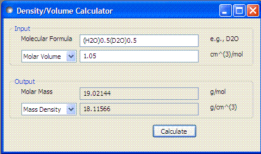

This tool is to calculate the mass density from the molar volume or vice versa. To calculate the mass density, the chemical formula and molar volume should be provided.
1. Molecular Formula: The chemical formula of ONE molecule or ONE atom. For mixtures, the ratio of the each molecules should be used; for example, (H2O)0.5(D2O)0.5.
2. Select input (molar volume or mass density) from combobox. Then type in the input value.
3. Click the 'Calculate' button to perform the calculation.
4. Outputs also include the molar mass (weight) that depends only on the chemical formula
